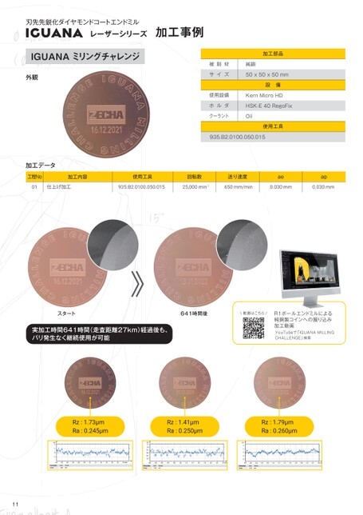

刃先先鋭化ダイヤモンドコートエンドミルレーザーシリーズIGUANA加工事例IGUANAミリングチャレンジ外観被削材サイズ使用設備ホルダクーラント加工部品純銅50x50x50mm設備KernMicroHDHSK-E40RegoFixOil使用工具935.B2.0100.050.015加工データ工程No加工内容01仕上げ加工使用工具回転数送り速度aeap935.B2.0100.050.01525,000min-1650mm/min0.030mm0.030mmスタート641時間後動画はこちら実加工時間641時間(走査距離27km)経過後も、バリ発生なく継続使用が可能R1ボールエンドミルによる純銅製コインへの掘り込み加工動画YouTubeで「IGUANAMILLINGCHALLENGE」検索Rz:1.73μmRa:0.245μmRz:1.41μmRa:0.250μmRz:1.79μmRa:0.260μm11
